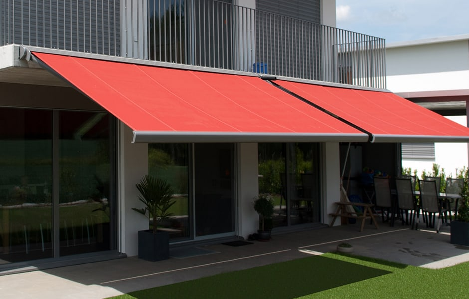

NUESTROS PRODUCTOS
LONA PARA CAMIONES
Características:
- Tela Plástica confeccionada con tejido de poliéster de
alta resistencia
- Excelente estabilidad dimensional.
- Protección UV.
-
Recubrimiento de PVC en ambas caras.
Presentación: Ancho 1,53 mts. Rollos de 50 mts de longitud.
LONA PARA CARPAS
Características:
- Cobertura liviana confeccionada con tejido de
poliestar.
- Recubrimiento de PVC en ambas
caras.
- Proteccion UV.
- Excelente estabilidad dimensional.
- Colores lisos, y
doble
faz (blanco/amarillo).
Presentacion: Ancho 1,50 mts. Rollos de 30 mts de longitud.
LONA CUBRE PILETAS
Características:
- Tela Plástica confeccionada con tejido de poliéster
- Su tejido le confiere la mayor resistencia en cobertura liviana.
- Recubrimiento de PVC
en ambas caras.
- Excelente estabilidad dimensional.
- Protección UV.
Presentación:
Ancho 1,55 mts. Rollos de 30 mts de longitud.
LONA PARA CORTINA

Características:
- Tela Plástica confeccionada con tejido de hilado de
poliéster de alta resistencia.
- Material Autoexinguible según norma IRAM-INTI-CTI G 7577.
- Certificación de cada partida (INTI).
- Recubrimiento de PVC en ambas caras.
-
Excelente estabilidad dimensional.
- Protección UV.
Presentación:
Ancho 1,53 mts. Rollos de 50 mts de longitud.
LONA PARA SILOS
Características:
- Tela Plástica confeccionada especialmente para usos
agrícolas en la protección de granos.
- Está constituida por un tejido anti-desgarre de
alta resistencia.
- Recubrimiento de PVC en ambas caras.
- Doble faz, anverso color
tiza brillante y reverso negro.
- Excelente estabilidad dimensional.
Presentación:
Ancho 1,53 mts. Rollos de 50 mts de longitud.
LONA PARA TOLDOS
Características:
- Tela Plástica confeccionada con tejido de poliéster
- Su tejido le confiere la mayor resistencia en cobertura liviana.
- Recubrimiento de PVC
en ambas caras.
- Excelente estabilidad dimensional.
- Protección UV.
Presentación:
Ancho 1,55 mts. Rollos de 30 mts de longitud.
LONA TRANSPARENTE

Características:
- Lona de PVC con una permeabilidad a la luz superior.
- Quimicamente resistente.
Propiedades aislantes confiables.
- Respetuoso con el
medio ambiente y duradero.
Presentación:
Ancho 1,60 mts. Rollos de 30 mts de longitud.
LONA PARA PILETAS

Características:
- Telas fabricadas especialmente para la construcción de
piletas de lona en general, fabricadas según los requerimientos del cliente (en cuanto a tipo de
tejido y colores).
- Los tipos de tejido se adaptan a los distintos tamaños de las piletas
Presentación:
A convenir con el cliente.